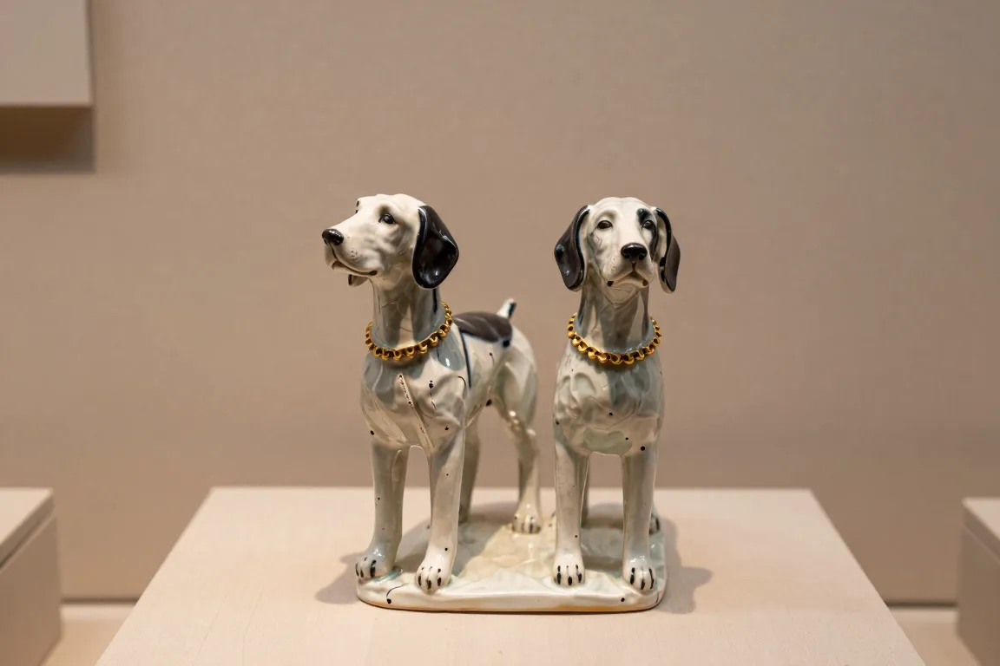

Earthenware figures from Staffordshire: small folk figures, then Victorian flatbacks of heroes, royals and dogs. A lead glaze and bold enamel colours make a cheap mantelpiece figure for the home.

Core thesis
A figure for every mantelpiece comes from a plaster mould and a clear glaze: flat, bold and cheap, it puts a hero, a king or a dog in a poor man's house.
Design principles
Press the figure in a two-piece plaster mould, and use a flat back for the flatback form.
Use a white or cream earthenware, and cover it with a clear lead glaze.
Paint with bold, flat colours: blue, red, green, yellow and black, with gilt on the details.
Make the figure 15 to 40 cm high, with a simple base that carries a name in relief or in gilt.
Choose a subject for the public: a royal, a soldier, a preacher, a murderer, a pair of spaniels.
Pair the figures, as a left and a right, to flank the clock on the mantelpiece.
Give a spaniel a white coat with red or black patches, a gilt chain and a padlock.
Fire the enamel colours in a third firing at about 700 °C.
Anti-patterns
A fine thin porcelain body with a delicate lace skirt
A matt unglazed biscuit surface
A refined shaded modelling of the face with no outline